MANTENIMIENTO Y REPARACIÓN
SERVICIO EN EL VEHÍCULO
PROCEDIMIENTOS GENERALES DE SERVICIO DEL SISTEMA DE AIRE ACONDICIONADO
Sustitución de juntas tóricas.
Importante: Aunque las juntas tóricas puedan parecer idénticas, es muy importante que se utilicen sólo las juntas tóricas de repuesto recomendadas para el A/A o, de lo contrario, pueden producirse excesivas fugas de refrigerante.
Importante: Deslice siempre la junta tórica sobre la pestaña del tubo para garantizar un asiento y sellado correctos.
Monte las nuevas juntas tóricas de repuesto aprobadas y recomendadas para el aire acondicionado, siempre que se desmonte una junta o racor, excepto cuando las juntas tóricas se suministren ya colocadas en los nuevos componentes.
Al sustituir las juntas tóricas en un componente del A/A o en una conexión conjunta, el diseño de montaje debe ser identificado para asegurar la instalación de la junta tórica de repuesto correcta.
Antes del montaje, compruebe que las juntas tóricas y racores no tengan marcas o deformaciones. Las piezas deformadas o melladas deben sustituirse. Si no se utilizan las piezas de repuesto apropiadas y los procedimientos correctos, pueden producirse excesivas fugas de refrigerante.
Manipulación del refrigerante.
Precaución: Trabaje siempre en una zona bien ventilada y evite respirar los vapores del refrigerante. Si tiene dificultades para respirar, solicite atención médica inmediatamente. Si el refrigerante entra en contacto con alguna parte del cuerpo, lave la zona afectada con agua. Si aparece erupción o dolor, solicite atención médica.
Los sistemas de A/A contienen refrigerante. El refrigerante es una mezcla química que exige procedimientos especiales de manejo para evitar lesiones personales.
Utilice siempre gafas de seguridad y envuelva un paño limpio alrededor de los racores, las válvulas y las conexiones cuando se realicen trabajos que impliquen abrir el sistema de refrigerante. No suelde ni limpie con vapor las tuberías o componentes del A/A montados en el vehículo o cerca de éstos.
Todos los tambores de refrigerante se envían con un tapón roscado de metal pesado. El propósito del tapón es proteger la válvula y el tapón de seguridad de posibles daños. Es una buena costumbre volver a colocar el tapón después de cada uso del tambor.
Si fuera necesario transportar o llevar un tambor de refrigerante en el vehículo, no lo lleve nunca en el habitáculo.
Manipulación de las tuberías y racores del refrigerante
Aviso: La aplicación de un par de apriete demasiado bajo o demasiado alto al apretar un racor puede dar lugar a una unión floja o a la deformación de piezas de unión. Ambas anomalías pueden provocar fugas de refrigerante.
- Mantenga todas las tuberías de metal sin marcas o torceduras. La existencia de cualquier obstrucción en las tuberías dará lugar a una pérdida de capacidad del sistema.
- No doble nunca un manguito flexible a un radio menor de cuatro veces su diámetro.
- No acerque nunca una tubería flexible al colector de escape.
- Revise los manguitos flexibles periódicamente para ver si hay fugas o fragilidad.
- Sustituya las tuberías flexibles por otros nuevos si presentan señales de deterioro o fugas.
- Descargue todo el refrigerante del sistema de refrigeración antes de desconectar un rácor de dicho sistema.
- Proceda con sumo cuidado independientemente de lo que midan los manómetros.
- Abra los racores lentamente.
- Mantenga la cara y las manos alejadas del racor para evitar lesiones en caso de que hubiese refrigerante líquido en la tubería.
- Si se observa que hay presión al aflojar un racor, deje que se descargue como se describe en el apartado "Procedimientos de descarga, adición de aceite, evacuación y carga para el sistema de A/A" de esta sección.
- Tape o coloque cinta en la tubería de refrigerante después de abrirla. Esto evitará la entrada de humedad y suciedad que pueda desgastar internamente el compresor u obstruir tuberías en el condensador, el núcleo del evaporador, la válvula de expansión o las rejillas de admisión del compresor.
Importante: Utilice dos llaves apropiadas para conectar los racores provistos de juntas tóricas.
- Refuerce el racor opuesto para evitar la deformación de los tubos de conexión o los componentes.
- Refuerce los racores abocardados en las conexiones provistas de manguito flexible y el acoplamiento al cual se fija con dos llaves para evitar que gire el racor y se dañe el asiento del mismo.
- Mantenga las juntas tóricas y sus asientos en perfectas condiciones. Una rebaba o una partícula de suciedad puede causar una fuga de refrigerante.
- Sumerja las juntas tóricas nuevas en aceite PAG limpio antes de su montaje.
Mantenimiento de la estabilidad química en el sistema de refrigerante
El funcionamiento eficaz y la duración del sistema de A/A dependen de la estabilidad química del sistema de refrigeración. Cuando materias extrañas, como suciedad, aire o humedad, contaminan el sistema de refrigeración, cambian la estabilidad del refrigerante y del aceite PAG de compresor. Afectan también a la relación presión-temperatura, reducen el funcionamiento eficaz y, posiblemente, puedan causar corrosión interior y desgaste anormal de las piezas móviles.
Tenga en cuenta las siguientes prácticas para asegurar la estabilidad química del sistema:
- Limpie la suciedad o el aceite que haya en cualquier conexión o cerca de ésta antes de abrir dicha conexión. Esto reducirá las posibilidades de que entre suciedad en el sistema.
- Tape, obture o coloque cinta en ambos lados de una conexión lo antes posible, después de abrirla. Esto evitará que entren suciedad, materias extrañas y humedad.
- Mantenga todas las herramientas limpias y secas, incluso el juego de manómetros del colector y todas las piezas de repuesto.
- Utilice un dispositivo de transferencia y un recipiente limpio para agregar aceite refrigerante PAG. Esto garantizará que el aceite esté tan exento de humedad como sea posible. Consulte el apartado "Procedimientos de descarga, adición de aceite, evacuación y carga para el sistema de aire acondicionado" de esta sección.
- Tenga preparado todo lo que vaya a necesitar cuando abra el sistema de A/A con el fin de realizar todas las operaciones con rapidez. No deje abierto el sistema de A/A durante más tiempo del necesario.
- Vacíe y vuelva a cargar el sistema de A/A que se haya abierto. Consulte el apartado "Procedimientos de descarga, adición de aceite, evacuación y carga para el sistema de aire acondicionado" de esta sección.
Todas las piezas de repuesto han sido deshidratadas y selladas antes de su envío. Deben permanecer selladas hasta justo antes de efectuar las conexiones. Todas las piezas deben mantenerse a temperatura ambiente antes de retirarlas del envoltorio. Esto evita que entre en el sistema la condensación de la humedad del aire. Vuelva a sellar todas las piezas lo antes posible si se han desmontado las tapas pero no ha sido posible efectuar las conexiones de forma inmediata.
Procedimientos de descarga, adición de aceite, evacuación y carga para el sistema de aire acondicionado
Precaución: Utilice sólo depósitos de refrigerante rellenables y que estén autorizados para la estación de carga que se esté utilizando. El uso de otros depósitos puede causar lesiones personales o invalidar la garantía. Consulte las instrucciones del fabricante de la estación de carga.
Precaución: Para evitar lesiones personales, utilice siempre gafas de seguridad y guantes al realizar trabajos relacionados con la apertura del sistema de refrigeración.
En una sola conexión, una estación de carga descarga, evacua y recarga un sistema de aire acondicionado. El filtrado durante el ciclo de recuperación, junto con el filtrado durante el ciclo de evacuación, garantizan un suministro de refrigerante limpio y seco para la carga del sistema de A/A.
Aviso: - No utilice nunca la estación de carga de R-134a en un sistema cargado con R-12. Los refrigerantes y los aceites no son compatibles con los de otro sistema y nunca deben mezclarse, ni siquiera en cantidades pequeñas. La mezcla de residuos de refrigerante ocasionará daños en el equipo.
- No utilice nunca adaptadores que adapten el tamaño de un racor al de otro. Tal práctica permite la entrada de suciedad, lo que puede causar fallos en el sistema.
Preparación y mantenimiento de la estación de carga
Consulte las instrucciones del fabricante para el procedimiento de preparación inicial y todos los procedimientos de mantenimiento. Existen muchas estaciones de carga disponibles. Todas realizan diversas tareas para descargar el sistema y recuperar el refrigerante, evacuar el sistema, añadir una cantidad determinada de aceite y recargar un sistema de A/A con una cantidad determinada de refrigerante.
Funciones del panel de control
Una estación de carga tendrá controles e indicadores que permitan al operador controlar y supervisar la operación que se esté realizando. Consulte las instrucciones del fabricante para obtener más detalles. En la información se puede incluir:
- Interruptor principal de encendido/apagado: El interruptor principal de encendido/apagado suministra energía eléctrica al panel de control.
- Pantalla: La pantalla muestra el tiempo programado para el vacío y el peso del refrigerante calculado para la recarga. Consulte las instrucciones del fabricante para la información de programación.
- Manómetro del colector de baja presión: Este manómetro muestra la presión en el lado de baja del sistema.
- Manómetro del colector de alta presión: Este manómetro muestra la presión en el lado de alta del sistema.
- Controles: Incluye los controles de las diferentes funciones.
- Válvula de baja presión: Conecta a la unidad el lado de baja presión del sistema de A/A.
- Indicador de humedad: Muestra si el refrigerante está húmedo o seco.
- Válvula de alta presión: Conecta a la unidad el lado de alta presión del sistema de A/A.
Recuperación del refrigerante
Importante: Utilice sólo un depósito de refrigerante que esté diseñado para la estación de carga que se esté usando. El mecanismo de limitación de exceso de llenado de la unidad se calibra específicamente para su uso con este depósito. Las válvulas del depósito también están fabricadas específicamente para esta unidad.
- Conecte el tubo del lado de alta con el acoplamiento de desconexión rápida al racor del lado de alta del sistema de A/A del vehículo.
- Abra la válvula de acoplamiento después de la conexión.
- Conecte el tubo del lado de baja con el acoplamiento de desconexión rápida al racor del lado de baja del sistema de A/A del vehículo.
- Abra la válvula de acoplamiento después de la conexión.
- Compruebe los manómetros del lado de alta y de baja presión en el panel de control de la unidad para asegurarse de que el sistema de A/A tiene presión. Si no hay presión, no hay refrigerante en el sistema para su recuperación.
Importante: Si no hay refrigerante en el sistema, no continúe con la operación de recuperación. Esto dejaría pasar aire al depósito de recuperación.
- Abra las válvulas de los lados de alta y de baja presión.
- Abra las válvulas de gas y de líquido en el depósito.
- Vacíe el aceite que pueda haber en el separador de aceite.
- Cierre la válvula de drenaje de aceite.
- Conecte la unidad a la salida de tensión adecuada.
- Encienda el interruptor principal de encendido/apagado.
Aviso: Nunca utilice aceite de refrigerante ya usado. Podría dañar el sistema de aire acondicionado. Deseche el aceite de refrigerante donde proceda.
- Comience el proceso de recuperación. Consulte las instrucciones del fabricante para la estación de carga que se esté utilizando.
Importante: Algunos aceites de lubricación PAG para sistemas de A/A pueden eliminarse con el refrigerante durante la recuperación. La cantidad de aceite eliminado varía. La estación de carga separa el aceite del refrigerante y proporciona un medio para determinar cuánto aceite se eliminó. Reponga la misma cantidad de aceite al recargar el sistema. Consulte las instrucciones del fabricante para la estación de carga que se esté utilizando.
- Espere 5 minutos. Compruebe el manómetro de baja presión del panel de control. Si el A/A ha mantenido el vacío, la recuperación está completa.
- Si la presión del manómetro de baja presión sube por encima de cero, hay más refrigerante en el sistema. Recupere el refrigerante adicional. Repita este paso hasta que el sistema mantenga el vacío durante 2 minutos.
Importante: Si el indicador de control señala que el depósito de refrigerante está lleno durante el proceso de recuperación y la unidad se desconecta, monte un depósito vacío para almacenar el refrigerante necesario para los pasos posteriores del proceso. No utilice ningún otro tipo de depósito.
Evacuación
El depósito de la unidad debe contener una cantidad de refrigerante R-134a para la carga. Compruebe la cantidad de refrigerante que hay en el depósito. Si hay menos de 3,6 kg (8 libras) de refrigerante, añada refrigerante nuevo al depósito. Consulte las instrucciones del fabricante para la adición de refrigerante.
- Compruebe que los manguitos de baja y alta presión estén conectados al sistema de A/A. Abra las válvulas de alta y baja presión en el panel de control de la unidad.
- Abra las válvulas de gas y líquido del depósito.
Importante: Consulte las instrucciones del fabricante para la estación de carga que se esté utilizando. Es necesario evacuar el sistema antes de cargarlo con refrigerante nuevo o reciclado.
- Ponga en marcha la bomba de vacío y comience el proceso de evacuación. Los gases no- condensables (aire en su mayor parte) son expulsados automáticamente del sistema durante el proceso de reciclado. Puede oír como se libera la presión.
- Compruebe si hay fugas en el sistema. Consulte las instrucciones del fabricante para la estación de carga que se esté utilizando.
Importante: Cambie frecuentemente el aceite de la bomba de vacío. Consulte las instrucciones del fabricante para la estación de carga que se esté utilizando.
Reposición de la carga de aceite del sistema de aire acondicionado
Todo el aceite eliminado del sistema de A/A durante el proceso de recuperación debe reponerse en este momento.
- Utilice la botella graduada correcta de aceite PAG para el sistema R-134a.
- Utilice la botella graduada correcta de aceite PAG para el sistema R-134a.
Importante:
- Mantenga en todo momento las botellas bien taponadas con el fin de proteger el aceite de la humedad y la suciedad.
- No abra nunca la válvula de inyección de mientras la presión en el sistema de A/A dé positivo. Esto provocará retorno del aceite a través de la salida de la botella. Para esta operación se debe tener el sistema de A/A en vació.
- Nunca deje que el nivel de aceite caiga por debajo del tubo de recogida mientras carga o vuelve a llenar el sistema. Esto permitiría que entrara aire en el sistema de A/A.
- Consulte las instrucciones del fabricante para la estación de carga que se esté utilizando. Añada la cantidad apropiada de aceite PAG al sistema.
- Cierre la válvula cuando la carga de aceite requerida haya entrado en el sistema.
Carga
Importante: Vacíe el sistema de A/A antes de efectuar la carga.
- Cierre la válvula del lado de baja presión del panel de control.
- Abra la válvula del lado de alta presión en el panel de control.
- Consulte las instrucciones del fabricante para la estación de carga que se esté utilizando.
- Introduzca la cantidad de refrigerante necesaria para cargar el A/A. Asegúrese de que está utilizando el sistema de medida correcto (kg., lb)
- Comience el proceso de carga.
Transferencia terminada con éxito
- Cierre la válvula del lado de alta presión en el panel de control de la unidad. Las dos válvulas deben estar cerradas.
- Ponga en marcha el vehículo y el sistema de A/A.
- Deje el motor funcionando hasta que se estabilicen las lecturas de los manómetros de alta presión y baja presión.
- Compare las lecturas con las especificaciones del sistema.
- Compruebe la temperatura de salida del evaporador para asegurarse de que el sistema de A/A está funcionando según las especificaciones.
- Mantenga el A/A funcionando.
- Cierre la válvula de acoplamiento del lado de alta.
- Desconecte el manguito de alta presión del vehículo.
- Abra las válvulas de alta y baja presión en el panel de control.
- El sistema aspirará rápidamente refrigerante de ambos manguitos a través del manguito del lado de baja presión.
- Cierre la válvula de acoplamiento del lado de baja presión.
- Desconecte el manguito del lado de baja del vehículo.
Transferencia fallida
A veces, no se transfiere toda la carga al sistema de aire acondicionado. Hay dos razones para que esto ocurra.
- La presión en el depósito de la unidad y la presión en el sistema de A/A son prácticamente iguales. Esto dará lugar a que la transferencia se realice con demasiada lentitud. Consulte las instrucciones del fabricante para la estación de carga que se esté utilizando.
- No había suficiente refrigerante en el depósito de la unidad para transferir la carga completa. Es necesario recuperar la carga parcial del refrigerante del vehículo y, a continuación, drenar el sistema de A/A y cargarlo de nuevo. Consulte las instrucciones del fabricante para la estación de carga que se esté utilizando.
Cables del HVAC
Conjunto de control
Ajuste del cable de control de la temperatura
El cable de temperatura no es ajustable. El cable y los alojamientos tienen una longitud fija. Además, el varillaje de la caja del distribuidor de aire/calefactor no permite el ajuste. Si se sospecha de la existencia de una avería, compruebe el funcionamiento correcto del regulador y las compuertas mecánicas del distribuidor de aire/calefactor.
Motor del ventilador.
Resistencia del motor del ventilador
Conjunto de interruptores del antivaho y el aire acondicionado
Estos interruptores no pueden sustituirse in situ. Si se avería alguno, sustituya el conjunto de control. Consulte las instrucciones del apartado
"Conjunto de control" de esta sección.
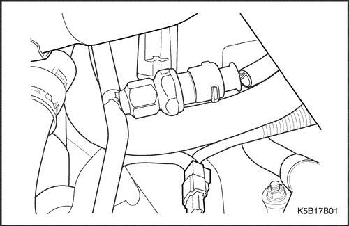


Interruptor de dos presiones del A/A
Procedimiento de desmontaje
- Desconecte el cable negativo de la batería.
- Desmonte el tablero del parachoques delantero. Consulte la sección 9O, Parachoques y protector.
- Libere el cierre del conector y extraiga el conector del cable del interruptor de dos presiones del aire acondicionado (A/A).
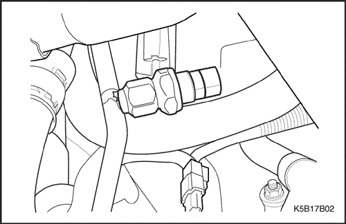
- Sujete el tetón del racor de la tubería con una llave y con otra llave desmonte el interruptor de dos presiones del A/A.
- Deseche la junta tórica.
Procedimiento de montaje
- Coloque un nuevo retén en el interruptor de dos presiones del A/A.
- Monte el interruptor de dos presiones del A/A.
Apretar
Apriete el interruptor de dos presiones del A/A hasta 7 N•m (62 lb-pulg.).
- Monte el tablero del parachoques delantero. Consulte la sección 9O, Parachoques y protector.
- Conecte el cable negativo de la batería.
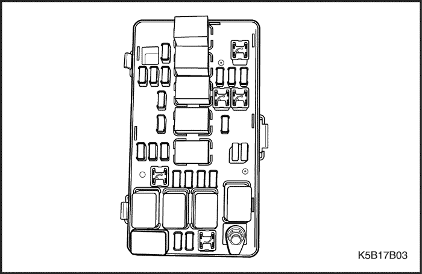
Relé del compresor del aire acondicionado
Procedimiento de desmontaje
- Desconecte el cable negativo de la batería.
- El relé está situado en la caja de fusibles del compartimento del motor, en el fondo del mismo.
- Tire del relé hacia arriba en línea recta y sáquelo.
Procedimiento de montaje
- Alinee los contactos del terminal del relé con el receptáculo base.
- Empuje el relé en la base hasta que quede acoplado.
- Conecte el cable negativo de la batería.
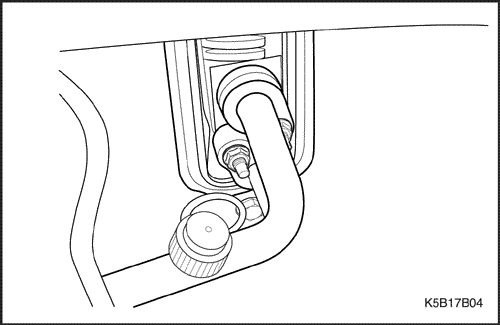
Válvula de expansión del aire acondicionado
Procedimiento de desmontaje
- Recupere el refrigerante. Consulte el apartado "Procedimientos de descarga, adición de aceite, evacuación y carga para el sistema de aire acondicionado" de esta sección.
- Desconecte el cable negativo de la batería.
- Quite las tuercas de fijación del bloque de conexiones del tubo central del evaporador.
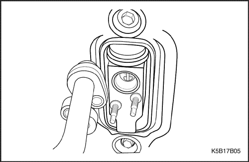
- Quite los espárragos de fijación del conector de la válvula de expansión.
- Desmonte la válvula de expansión.
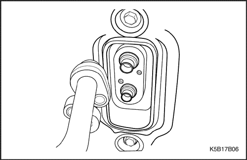
- Deseche la junta tórica.
Procedimiento de montaje
- Limpie la superficie de las juntas tóricas para eliminar la suciedad o la contaminación.
- Coloque la nueva junta tórica en el tubo del evaporador.
- Coloque los vástagos roscados de la válvula de expansión.
- Coloque los vástagos roscados de la válvula de expansión.
Apretar
Apriete los vástagos roscados de la válvula de expansión hasta 12 N•m (106 lb-pulg.).
- Coloque la tuerca de fijación del bloque de conexiones del tubo del evaporador.
Apretar
Apriete la tuerca de fijación del bloque de conexiones del tubo del evaporador hasta 14 N•m (10 lb-pie).
- Conecte el cable negativo de la batería.
- Vacíe y vuelva a cargar el sistema. Consulte el apartado "Procedimientos de descarga, reposición de aceite, purga y carga del sistema de A/A" de esta sección.
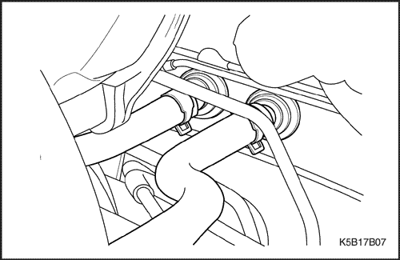
Conjunto de la caja del distribuidor de aire/calefactor
Procedimiento de desmontaje
- Recupere el refrigerante. Consulte el apartado "Procedimientos de descarga, adición de aceite, evacuación y carga para el sistema de aire acondicionado" de esta sección.
- Vacíe el sistema de refrigeración. Consulte la sección 1D. Sistema de refrigeración del motor.
- Desconecte el cable negativo de la batería.
- Desmonte el conjunto soporte del panel de instrumentos. Consulte la Sección 9E, Instrumentación/información para el conductor.
- Comprima las abrazaderas de las mangueras del calefactor y deslice las abrazaderas hacia el motor.
- Desmonte las dos mangueras del calefactor del panel de separación.
- Quite las tuercas de sujetan el manguito de aspiración del A/A y el bloque de conexiones del tubo del evaporador de líquido en el panel de separación.
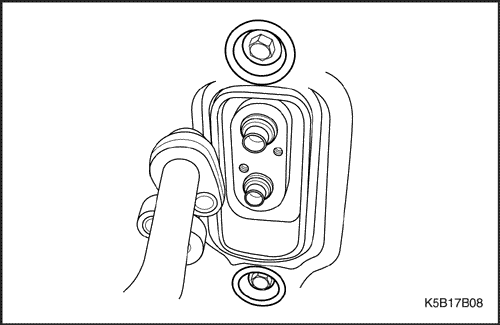
- En el lado del motor del panel de separación, quite los tornillos que fijan el conjunto de la caja del distribuidor de aire/calefacción al panel de separación.
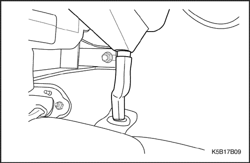
- Desmonte el manguito de drenaje de condensación situado bajo la guantera.
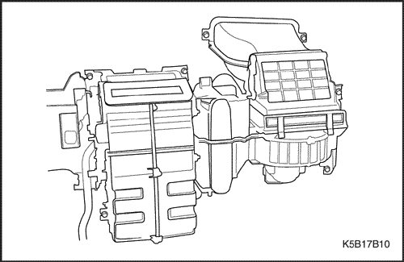
- Quite las tuercas del conjunto de la caja del distribuidor de aire/calefactor.
- Desmonte el conjunto de la caja del distribuidor de aire/calefactor del vehículo.
Procedimiento de montaje
- Monte el conjunto de la caja del distribuidor de aire/calefactor del vehículo.
- Monte el manguito de drenaje de condensación de la caja.
- Coloque las tuercas del conjunto de la caja del distribuidor de aire/calefactor.
Apretar
Apriete las tuercas del conjunto de la caja del distribuidor de aire/calefactor hasta 4 N•m (35 lb-pulg.).
- Coloque los tornillos del conjunto de la caja del distribuidor de aire/calefactor.
Apretar
Apriete los tornillos del conjunto de la caja del distribuidor de aire/calefactor hasta 8 N•m (71 lb-pulg.).
- Monte el manguito de aspiración del A/A y el tubo del evaporador de líquido en el bloque de conexiones de la brida del evaporador y apriete las tuercas.
Apretar
Apriete las tuercas de fijación del bloque de conexiones del tubo del evaporador hasta 14 N•m (10 lb-pie).
- Conecte las dos mangueras del calefactor al tubo del núcleo del calefactor.
- Deslice las abrazaderas de las mangueras del calefactor en su posición.
- Monte el conjunto soporte del panel de instrumentos. Consulte la Sección 9E, Instrumentación/información para el conductor.
- Llene el sistema de refrigeración.
- Conecte el cable negativo de la batería.
- Vacíe y vuelva a cargar el sistema de A/A. Consulte el apartado "Procedimientos de descarga, reposición de aceite, purga y carga del sistema de A/A" de esta sección.
Tubo de presión del A/A
Procedimiento de desmontaje
- Recupere el refrigerante. Consulte el apartado "Procedimientos de descarga, adición de aceite, evacuación y carga para el sistema de aire acondicionado" de esta sección.
- Desconecte el cable negativo de la batería.
- Quite las tuercas del manguito de aspiración de refrigerante del A/A y el tubo del evaporador de líquido.
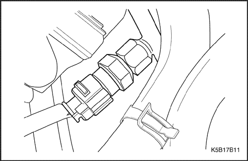
- Desenchufe el conector eléctrico del transductor del A/A.
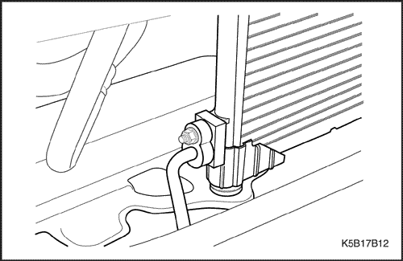
- Quite la tuerca de fijación que une el tubo del evaporador de líquido al condensador.
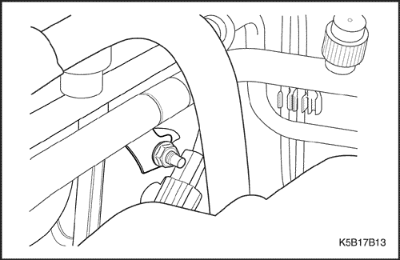
- Quite la tuerca de la abrazadera de soporte del tubo del evaporador de líquido del A/A y del manguito de aspiración de refrigerante del A/A.
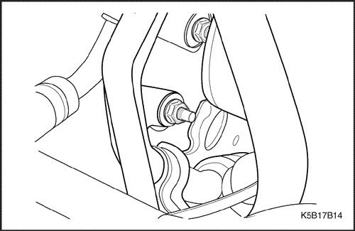
- Quite la tuerca de la abrazadera de soporte del tubo del evaporador de líquido del A/A y del manguito de aspiración de refrigerante del A/A.
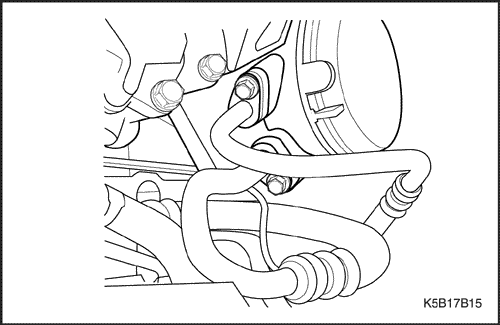
- Quite el tornillo de fijación que une el manguito de aspiración de refrigerante del A/A al bloque de conexiones del compresor.
- Quite el tornillo de fijación que une el manguito de descarga de refrigerante del A/A al bloque de conexiones del compresor.
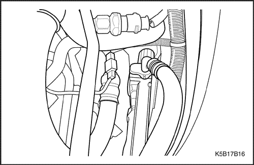
- Quite la tuerca del bloque de conexiones del manguito de descarga de refrigerante del A/A en el condensador.
- Desmonte el manguito de descarga de refrigerante del A/A.
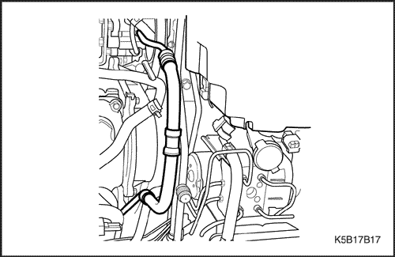
- Desmonte el tubo del evaporador de líquido del A/A y del manguito de aspiración de refrigerante del A/A.
Procedimiento de montaje
- Monte la sección del tubo del evaporador de líquido del A/A en el vehículo.
- Monte la junta tórica nueva en el bloque de conexiones.
- Coloque la tuerca de la abrazadera de soporte del tubo del evaporador de líquido del A/A y del manguito de aspiración del A/A.
Apretar
Apriete las tuercas del tubo del evaporador de líquido del A/A y del manguito de aspiración de refrigerante a 14 N•m (124 lb-pulg.).
Apretar
Apriete la tuerca de la abrazadera de soporte del tubo del evaporador de líquido del A/A y del manguito de aspiración hasta 4 N•m (35 lb-pulg.).
- Coloque la tuerca de la abrazadera de soporte del tubo del evaporador de líquido del A/A y del manguito de aspiración refrigerante del A/A.
Apretar
Apriete la tuerca de la abrazadera de soporte del tubo del evaporador de líquido del A/A y del manguito de aspiración hasta 4 N•m (35 lb-pulg.).
- Coloque los tornillos de fijación que unen el manguito de aspiración de refrigerante del A/A y el manguito de descarga de refrigerante al bloque de conexiones.
Apretar
- Apriete el tornillo de fijación que une el manguito de aspiración de refrigerante del A/A al bloque de conexiones hasta 22,5 N•m (16,5 lb-pie).
- Apriete el tornillo de fijación que une el manguito de descarga de refrigerante del A/A al bloque de conexiones hasta 22,5 N•m (16,5 lb-pie).
- Coloque la tuerca de fijación que une el tubo del evaporador de líquido al condensador.
Apretar
Apriete la tuerca de fijación que une el tubo del evaporador de líquido al condensador hasta 14 N•m (124 lb-pulg.).
- Coloque la tuerca de fijación que une el bloque de conexiones del manguito de descarga de refrigerante del A/A al condensador.
Apretar
Apriete la tuerca de fijación que une el bloque de conexiones del manguito de descarga de refrigerante del A/A al condensador hasta 14 N•m (124 lb-pulg.).
- Coloque el conector eléctrico del interruptor de dos presiones del A/A.
- Conecte el cable negativo de la batería.
- Ejecute y recargue el sistema de A/A. Consulte el apartado "Procedimientos de descarga, adición de aceite, evacuación y carga para el sistema de aire acondicionado" de esta sección.
Núcleo del calefactor
Procedimiento de desmontaje
- Desconecte el cable negativo de la batería.
- Desmonte el conjunto soporte del panel de instrumentos. Consulte la Sección 9E, Instrumentación/información para el conductor.
- Desmonte el conjunto de la caja del distribuidor de aire/calefactor. Consulte "Conjunto de la caja del distribuidor de aire/calefactor" de esta sección.
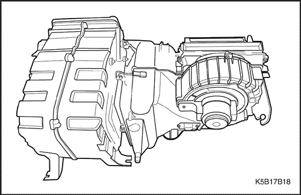
Aviso: Manipule la caja con cuidado para no dañar las palancas del varillaje.
- Quite los tornillos de la caja del núcleo del calefactor del conjunto de la caja del distribuidor de aire/calefactor.
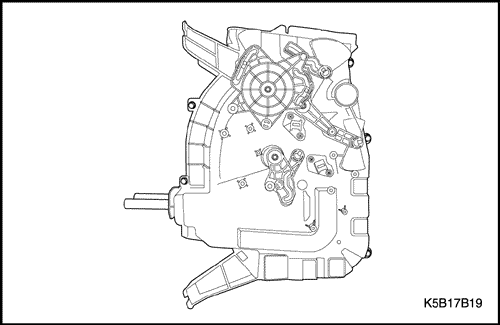
- Quite los tornillos que fijan la caja del núcleo del calefactor.
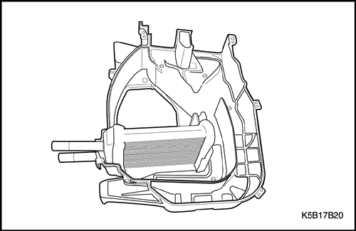
- Retire el núcleo del calefactor de su caja.
Procedimiento de montaje
- Monte el núcleo del calefactor en su caja.
- Coloque los tornillos que fijan la caja del núcleo del calefactor.
- Coloque los tornillos de la caja del núcleo del calefactor del conjunto de la caja del distribuidor de aire/calefactor.
- Monte la el conjunto de la caja del distribuidor de aire/calefactor. Consulte "Conjunto de la caja del distribuidor de aire/calefactor" de esta sección.
- Monte el conjunto soporte del panel de instrumentos. Consulte la Sección 9E, Instrumentación/información para el conductor.
- Llene el sistema de refrigeración. Consulte la Sección 1D, Sistema de refrigeración del motor. Sección 1D, Sistema de refrigeración del motor.
- Conecte el cable negativo de la batería.
- Vacíe y vuelva a cargar el sistema de A/A. Consulte el apartado "Procedimientos de descarga, adición de aceite, evacuación y carga para el sistema de aire acondicionado" de esta sección.
Núcleo del evaporador
Procedimiento de desmontaje
- Desconecte el cable negativo de la batería.
- Desmonte el conjunto de la caja del distribuidor de aire/calefactor. Consulte "Conjunto de la caja del distribuidor de aire/calefactor" de esta sección.
- Quite los tornillos que fijan el conjunto de la carcasa del evaporador.
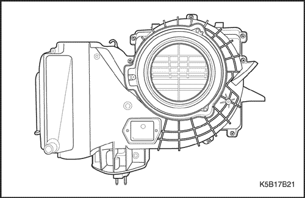
- Quite los tornillos de la tapa de la carcasa del evaporador.
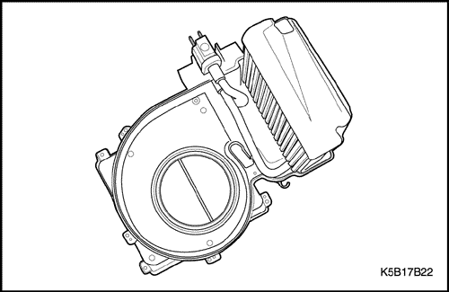
- Desmonte el núcleo del evaporador de la carcasa del evaporador.
- Quite los vástagos de la válvula de expansión junto con la válvula de expansión.
Procedimiento de montaje
- Monte la válvula de expansión. Consulte el apartado "Válvula de expansión" de esta sección.
- Monte el núcleo del evaporador en la carcasa.
- Coloque la tapa de la carcasa del núcleo del evaporador con sus tornillos.
- Coloque la carcasa del núcleo del evaporador con sus tornillos.
- Monte el conjunto soporte del panel de instrumentos. Consulte la Sección 9E, Instrumentación/información para el conductor.
- Conecte el cable negativo de la batería.
- Vacíe y vuelva a cargar el sistema de A/A. Consulte el apartado "Procedimientos de descarga, adición de aceite, evacuación y carga para el sistema de aire acondicionado" de esta sección.
Compresor
Procedimiento de desmontaje
- Desconecte el cable negativo de la batería.
- Descargue y recupere el refrigerante. Consulte el apartado "Procedimientos de descarga, adición de aceite, evacuación y carga para el sistema de aire acondicionado" de esta sección.
- Quite la tuerca del soporte del bloque de conexiones de los manguitos del A/C del compresor.
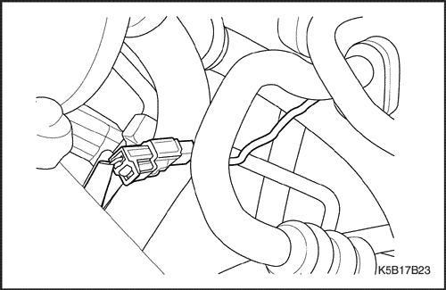
- Desenchufe el conector eléctrico del compresor.
- Desmonte la tapa inferior. Consulte la sección 9N, Bastidor y bajos de la carrocería.
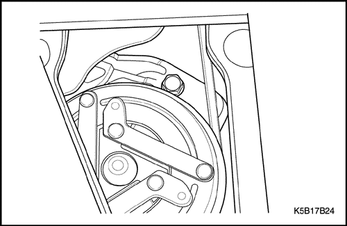
- Desmonte la correa del A/A. Consulte la sección 6B, Bomba de la dirección asistida.
- Quite el tornillo que une el compresor a la fijación superior del soporte.
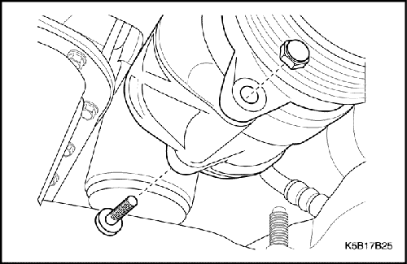
- Quite los tornillos que unen el compresor a la fijación inferior del soporte.
- Desmonte el compresor.
Procedimiento de montaje
- Monte el compresor.
- Coloque los tornillos que unen el compresor a la fijación inferior del soporte.
Apretar
Apriete los tornillos que unen el compresor a la fijación inferior del soporte hasta 22 N•m (16 lb-pie).
- Coloque el tornillo que une el compresor a la fijación superior del soporte.
Apretar
Apriete el tornillo que une el compresor a la fijación superior del soporte hasta 20 N•m (15 lb-pie).
- Coloque la tapa inferior. Consulte la sección 9N, Bastidor y bajos de la carrocería.
- Enchufe el conector eléctrico en el compresor.
- Coloque los tornillos de fijación que unen el manguito de aspiración de refrigerante del A/A y el manguito de descarga de refrigerante al bloque de conexiones.
Apretar
- Apriete el tornillo de fijación que une el manguito de aspiración de refrigerante del A/A al bloque de conexiones hasta 22,5 N•m (16,5 lb-pie).
- Apriete el tornillo de fijación que une el manguito de descarga de refrigerante del A/A al bloque de conexiones hasta 22,5 N•m (16,5 lb-pie).
- Monte la correa del A/A. Consulte la sección 6B, Bomba de la dirección asistida. Sección 6B, Bomba de la dirección asistida.
- Conecte el cable negativo de la batería.
- Vacíe y vuelva a cargar el sistema. Consulte el apartado "Procedimientos de descarga, adición de aceite, evacuación y carga para el sistema de aire acondicionado" de esta sección.
Condensador
Procedimiento de desmontaje
- Descargue y recupere el refrigerante. Consulte el apartado "Procedimientos de descarga, adición de aceite, evacuación y carga para el sistema de aire acondicionado" de esta sección.
- Desconecte el cable negativo de la batería.
- Desmonte el tablero del parachoques delantero. Consulte la sección 9O, Parachoques y protector.
- Quite la tuerca del bloque de conexiones del manguito de descarga de refrigerante del A/A en el condensador.
- Quite la tuerca de fijación que une el tubo del evaporador de líquido al condensador.
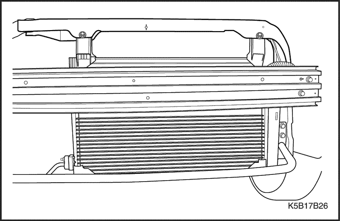
- Quite las tuercas de fijación del condensador.
- Levante el condensador para separarlo del soporte inferior.
- Desmonte el condensador.
Procedimiento de montaje
- Monte el condensador.
- Coloque las tuercas de fijación del condensador.
Apretar
Apriete las tuercas de fijación del condensador hasta 7 N•m (62 lb-pulg.).
- Coloque la tuerca de fijación que une el tubo del evaporador de líquido al condensador.
Apretar
Apriete la tuerca de fijación que une el tubo del evaporador de líquido al condensador hasta 14 N•m (124 lb-pulg.).
- Coloque la tuerca del bloque de conexiones del manguito de descarga de refrigerante del A/A en el condensador.
Apretar
Apriete la tuerca de fijación que une el bloque de conexiones del manguito de descarga de refrigerante del A/A al condensador hasta 14 N•m (124 lb-pulg.).
- Monte el parachoques delantero. Consulte la sección 9O, Parachoques y protector.
- Vacíe y vuelva a cargar el sistema. Consulte el apartado "Procedimientos de descarga, adición de aceite, evacuación y carga para el sistema de aire acondicionado" de esta sección.
REPARACIÓN DE LOS COMPONENTES
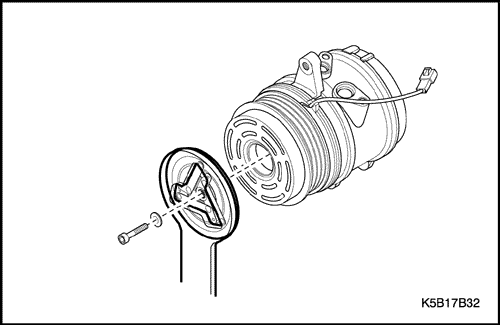
Revisión general del compresor
Herramientas necesarias
Útil de sujeción del cubo del embrague DW-610-010
Procedimiento de desmontaje
- Desmonte el compresor. Consulte el apartado "Compresor" de esta sección.
- Use el útil de sujeción del cubo del embrague DW-610-010 para aguantar el plato de accionamiento del embrague.
- Quite el tornillo del eje.
- Desmonte el plato de accionamiento del embrague.
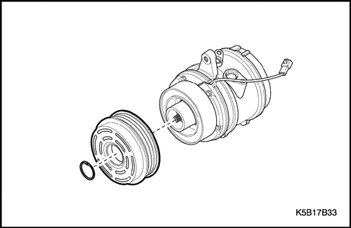
- Quite el anillo elástico de retención con unos alicates de anillos.
- Desmonte la polea del compresor.
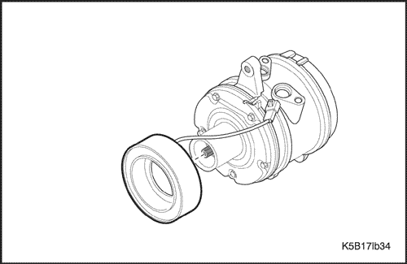
- Desconecte el soporte del cableado y desmonte el embrague electromagnético.
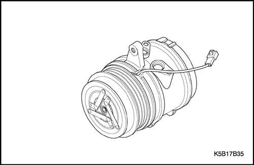
Procedimiento de montaje
- Desconecte el soporte del cableado y monte la bobina del embrague.
- Monte el anillo elástico de retención y la polea del compresor.
- Use el útil de sujeción del cubo del embrague DW-610-010 para montar el plato de accionamiento del embrague con su tornillo de eje.
Apretar
Apriete el tornillo del eje hasta 13 N•m (115 lb-pulg.).
- Monte el compresor. Consulte el apartado "Compresor" de esta sección.
| © Copyright Chevrolet Europe. Reservados todos los derechos |